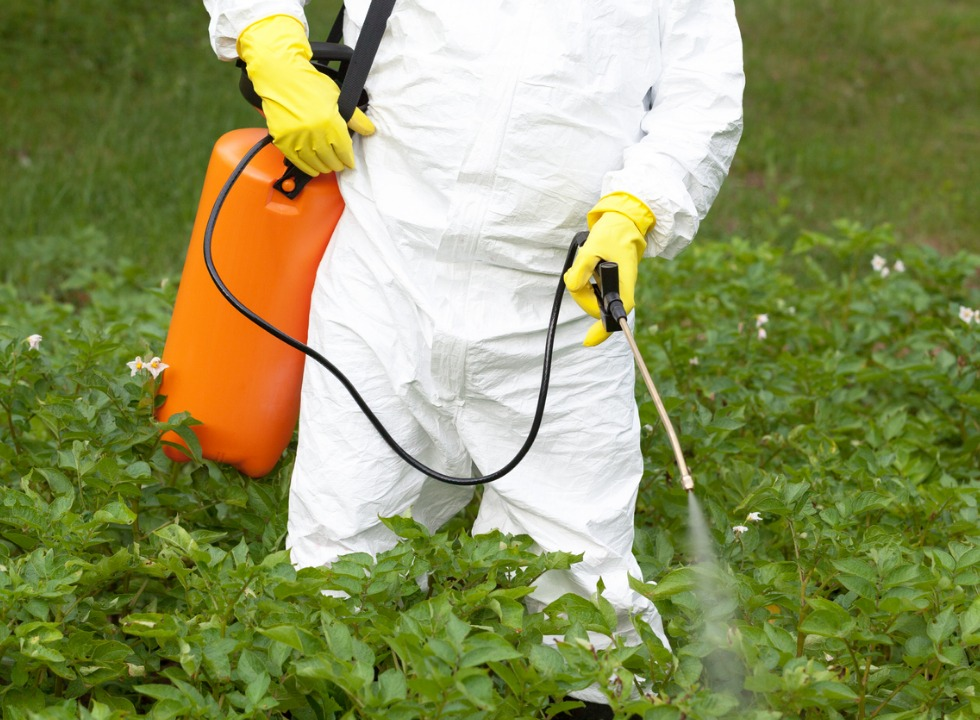
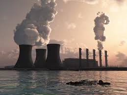
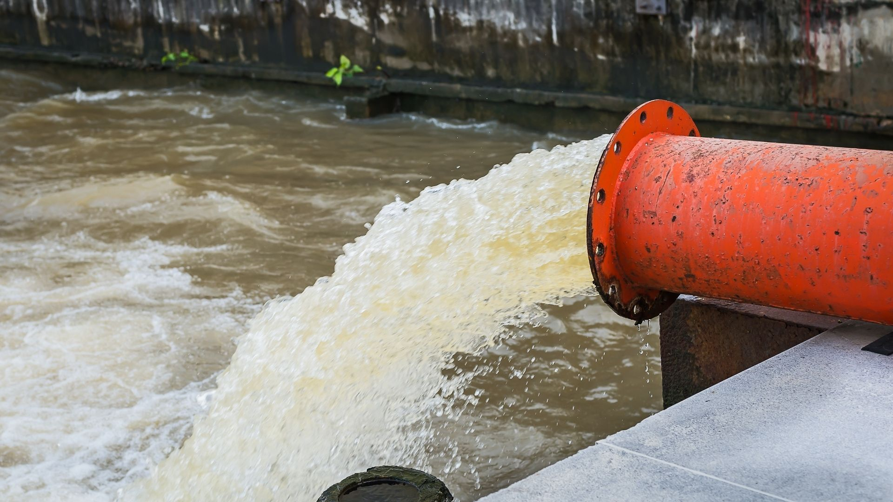

O que polui a vida na água?
Os principais poluentes da água incluem bactérias, vírus, parasitas, fertilizantes, pesticidas, medicamentos, nitratos, fosfatos, plásticos, resíduos fecais e até substâncias radioativas.
Estes elementos nem sempre tingem a água, de tal forma que a poluição hídrica é invisível muitas vezes.
Algumas causas:
Atividades agrícolas:
A atividade agrícola é potencialmente poluidora, porque os pesticidas e fertilizantes químicos podem infiltrar no solo e atingir o lençol freático. As substâncias utilizadas na composição dos fertilizantes e pesticidas podem ser dissolvidas na chuva e gerar impactos ambientais significativos no ecossistema.
Atividades industriais:
A atividade das indústrias gera diversos tipos de resíduos poluentes que podem ser lançados nos rios e no mar. A exploração petrolífera em águas subterrâneas ocorre, principalmente, pelo vazamento do petróleo no mar e geram desastres ecológicos. Além do vazamento na fase de exploração, a contaminação pode ocorrer no transporte ou pelo mau estado dos equipamentos de captação.

Atividades domésticas:
A atividade doméstica tem destaque pelo uso de detergentes, os quais potencializam o crescimento do fitoplâncton e algas que, quando morrem, esgotam a oferta de oxigênio. A contaminação da água também ocorre pelos resíduos de aterros sanitários mal instalados, lixões a céu aberto e lançamento de esgoto doméstico nas águas.
Isso acontece também pela infiltração do chorume no lençol freático.
O chorume é o lixo em estado líquido, que penetra no solo ou corre diretamente em direção aos rios. A falta de saneamento básico é outro fator responsável pela poluição das águas.

Contaminação por resíduos de cadáveres
Assim como ocorre com os lixões, a contaminação da água por resíduos de cadáveres deve-se pela infiltração de substâncias no solo.
Nos cemitérios, onde as medidas biológicas para isolamento dos corpos em decomposição não ocorrem, o solo é penetrado pelo chamado necrochorume e pode atingir os lençóis freáticos.
O necrochorume é formado pelos restos dos corpos em processo de decomposição.
Consequências da poluição da água O lançamento de substâncias físicas e químicas na água é potencialmente prejudicial para a vida aquática de animais e plantas.
.jpg)
Nos cemitérios, onde as medidas biológicas para isolamento dos corpos em decomposição não ocorrem, o solo é penetrado pelo chamado necrochorume e pode atingir os lençóis freáticos.
O necrochorume é formado pelos restos dos corpos em processo de decomposição.
Consequências da poluição da água O lançamento de substâncias físicas e químicas na água é potencialmente prejudicial para a vida aquática de animais e plantas.